Recollections of September 17, 1966, North Hollywood, California
In the late-summer of 1966, I was thirteen years old and a Dodger fan with a devotion that bordered on the maniacal. It was an obsession I shared with my Dad and a few other family members. Those who did not share the obsession just shook their heads at us. At least once a year Dad would take us to a game at Dodger Stadium — it was always a very special event. We would dissect the details of the game ad infinitum and pore over how crucial this game was to the Dodger’s pennant hopes and someone would often jokingly, say “You know, it’s not a matter of life and death . . . it’s much more important than that!” and we would all laugh. But there was no denying that games in September carried a weight that was hard to account for rationally but impossible to deny emotionally. Every pitch mattered. Every out had consequence. The standings were checked the way a patient checks a fever, and a Dodger loss could darken an entire afternoon in a way that nothing short of catastrophe should be able to darken an afternoon for a boy with nothing more pressing on his schedule than being thirteen.
That Saturday, September 17th, I was in the house on Goodland Avenue, listening intently to the radio. The Dodgers were once again in a tight pennant race and I was focused on the play-by-play in the early innings of the game, tracking every pitch, every play with a focus as though the outcome was all that really mattered. The afternoon was warm the way September afternoons in the San Fernando Valley were always warm — dry and golden and a little smoggy. Our neighborhood was a quiet portion of Goodland Avenue that had no outlet on the north end of our block which made it great for street baseball and football games.
We lived close to Burbank Airport — close enough that the sound of aircraft was simply part of the ambient texture of life. Planes came and went all day. You stopped hearing them after a while if you wanted, but we would often do our own plane spotting from the back yard — oh, that’s a Lockheed Constellation, or that’s a Douglas DC-3. To young boys living close to Burbank, planes were a big thing. But there are also times when more important things grab a thirteen-year-old’s attention like an important baseball game. You might notice the sound of air traffic but then go about what you were doing. You only notice things that break a pattern.
What broke the pattern that afternoon was a sound that was completely out of the ordinary.
It began like the sound of an aircraft approaching — a low menacing growl from the direction of the airport — but within seconds it was clear that this was different — something was definitely wrong. The sound was growing too fast and too loud. It had a quality to it that was different from the aircraft we heard all the time. This was heavier, rougher, something mechanical straining against itself. And it kept getting louder. Not the steady, predictable rise in volume of a plane on a normal approach path, but something asymmetric and urgent, the sound climbing toward a crescendo that normal aircraft sounds never approached. It became deafening. It shook the house, filled the air, it filled everything.
Then the house went dark.
The shadow of the plane swept over the house and swallowed it whole — a moving darkness, total and sudden, blotting out the September sun for a long, suspended moment. I sat very still, frozen in front of the radio. I did not hear a baseball game. The roar was at its peak. And then the shadow moved on, sliding off the far side of the house the way a storm cloud moves, and the sunlight came flooding back.
The sound of the plane began to recede, moving past and beyond the neighborhood — and then came the explosion.
It was not a sharp crack but a rolling concussion, a low rumble that traveled through the ground as much as the air, and it shook the house for what felt like five or ten seconds. Then there were shouts. The sound of running — feet on pavement, children’s voices, mothers calling out to their children. Neighbors poured into the street.
A plane had crashed at the northern end of Goodland Avenue, just a few hundred feet from our front door. I rushed out to the front yard and saw something no thirteen-year-old should ever have to see. Flames and billowing smoke and secondary explosions created an overwhelming, surreal scene. And in that moment my young adolescent brain came to grips with the gut wrenching conclusion that someone had just lost their life in that inferno.
The aircraft that crashed at the end of Goodland Avenue was an AJ-1 Savage — a powerful, twin-engine Korean War-era naval bomber that had been retrofitted as an aerial tanker for fighting wildfires, operated by AJ Airtankers out of Burbank. It had departed Burbank Airport that afternoon reportedly bound for an air show demonstration drop. Immediately after take-off, the plane lost an engine — a pilot’s worst nightmare. Low speed, low altitude and fully loaded — there was no good outcome available — only a choice between bad ones.
The pilot, Major John Francis “Jack” Hennessy, was 47 years old, a veteran of two wars who had survived more dangerous situations than most could have survived. He had arrived in England in the spring of 1944 as a B-17 pilot with the 729th Bomb Squadron, flying missions over Nazi Germany through the most dangerous phase of the air war — through the flak corridors over German oil refineries and industrial centers, through fighter interceptions, through everything the Reich could put in the sky. He survived all of it. He survived Korea too. Major Hennessy had served his country with distinction across two decades of war, and had gone on to spend his postwar years flying over burning hillsides and fighting the forest fires that annually plague the Western States. In the final seconds of his last flight, with the plane coming down and neighborhoods below him, he made a decision. He banked the aircraft. He turned it away from houses — deliberately guiding a dying plane away from the people and homes on the ground. The maneuver cost him his last available options, and sadly, Major Hennessy’s life.
Major John Hennessy was buried at Forest Lawn Memorial Park in Glendale, California. His headstone reads: Major, 729 Bomb Sq AF, World War II, Korea. It deserves more. It deserves the epithet; “Here lies a hero who saved countless lives as he lost his.”
In the days that followed, the story came to us in pieces — and only in whispers.
My father had been at work that Saturday when the crash happened. Sometime that afternoon he called Jim Bissell, a pilot and close friend who lived in Glendale, about twenty minutes away. Jim and Betty Bissell had been in my parents’ wedding party in 1947, and over the years our families had spent summer afternoons at the Bissell pool. Both couples part of a ‘supper club’ consisting of old friends that met regularly to sample the LA restaurant cuisine. When Dad got home that evening, he knew something the rest of us didn’t yet — that Jim Bissell and Jack Hennessy had served together in the same bomber squadron during the war, flying incredibly dangerous B-17 missions over Nazi occupied Europe.
He tried to tell us at dinner that night. My mother stopped him. She had watched the smoke from our front yard and that was enough — she had no room left for the story behind it. The subject was closed.
But after dinner my father found the time to share what he knew. In lowered voices, in the hallway, and in small installments over the following days as we pressed him for whatever he knew. And what he knew — what landed on me with a force I couldn’t quite account for at thirteen — was that the man who had died in the plane crash at the end of our street had known Mr. Bissell. Had flown B-17s with him in World War II. Had sat in the same briefing rooms, taxied out on the same runways, navigated the same frozen air over Germany. It was hard for a young boys brain to process and it took some time to sink in. By 1966 Bissell was flying corporate jets for Disney out of Burbank and Hennessy was fighting forest fires from the air. It was likely that the two men had stayed in touch — war buddies often did, and they were working out of the same airport. The world, it turned out, was that small. And somehow that smallness made the loss larger.
I never got the chance to talk with Jim Bissell about any of it directly. He was a grown-up and I was a kid, and then in 1968 we moved to St. Louis and I would see their Christmas cards but that was it. The questions I would like to have asked went unasked, the way so many questions do when you’re young enough to assume there will always be more time.
I did not know any of this on that September afternoon. I was thirteen, and what I knew was that something enormous had nearly happened, and then had not happen, and now there were sirens and smoke somewhere down the block and the Dodger game was still playing on the radio in a room that suddenly felt very small and not very important.
There is a particular quality to a moment that almost ends everything. It does not announce itself as such. It arrives, and passes, and only afterward — sometimes years afterward — does its full weight settle on you. For me that reckoning came slowly, in stages, over decades.
It came again when I was in my thirties and did my flight training out of Burbank Airport. I soloed out of the same airport Jack Hennessy had departed from on his last flight. I would take off to the north and bank over the San Fernando Valley and look down at the grid of streets below, and sometimes I would find myself calculating distances, tracing routes, imagining what a pilot sees in those final seconds when the instruments have told you what they have to tell you and the only remaining question is what kind of man you will be in the time that is left.
Hennessy did not hesitate. Every pilot I’ve ever spoken to understands what that means. In extremis, with everything going wrong at once, he had the presence of mind and the discipline and the selflessness to choose the harder path — the one that gave the people on the ground a chance to live out their Saturday afternoons and grow up and have their own lives. One of those lives was mine.
None of us got to thank him. None of us even knew his name that day.
The Dodgers won the game on that somber day in September 1966. They went on to win the NL pennant and then lose in the World Series but the fever pitch of my obsession was gone. Things had changed. Something had shifted. The pennant race that had seemed, that very afternoon, to be the most consequential thing in the world had been placed, suddenly and without my consent, next to something else — and in that comparison it found its actual size.
That is the thing about a genuine brush with death. It does not ask permission to rearrange your sense of proportion. It simply does it, quietly and permanently, the way a door closing in a far room suddenly changes the acoustics of the whole house.
What I came to understand only gradually — and more fully once I began flying myself — was the nature of what Jack Hennessy had done in those final seconds. It was not merely that he had tried to avoid the houses. It was that he had succeeded. A pilot in command of a dying aircraft, at low altitude, with seconds to work with, had managed to thread the plane through a residential neighborhood and bring it down in the one way that minimized, to the greatest extent still available to him, the loss of human life. He had, in effect, engineered the crash. Controlled the uncontrollable. Chosen deliberately in a moment where most people are left with nothing but panic.
He saved numerous lives that afternoon — sadly, he could not save his own.
I was thirteen years old. I did not know yet how close the distance was between ordinary and gone, between an afternoon on Goodland Avenue listening to the Dodger game and something else entirely. I know it now. I have known it for sixty years, every time I hear a plane overhead that sounds a little wrong, every time I’m in a plane and feel the ground fall away beneath me, every time I think about a man named Hennessy who made a choice in the sky above a neighborhood where a boy was listening to a baseball game.
The pennant race felt like life and death. Jack Hennessy helped me understand the difference.
His final gift was our lives. We lived them — and not a day has passed that I haven’t been grateful for that.
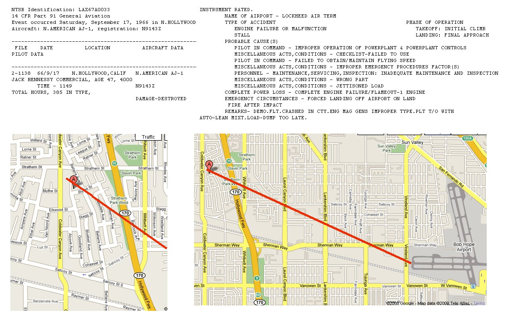
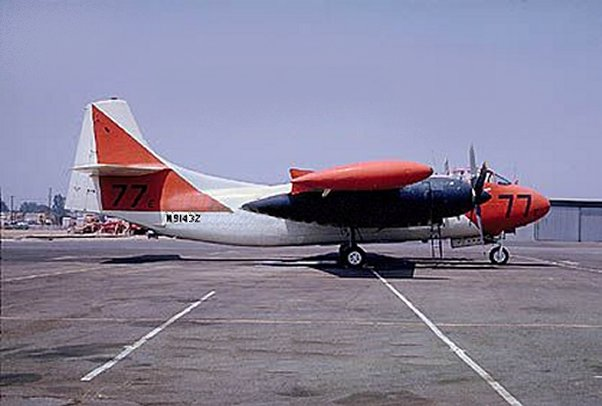
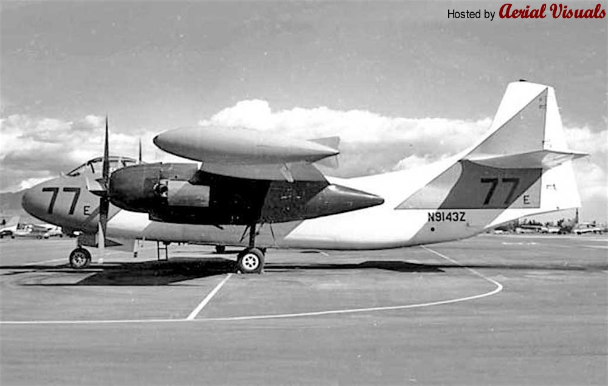
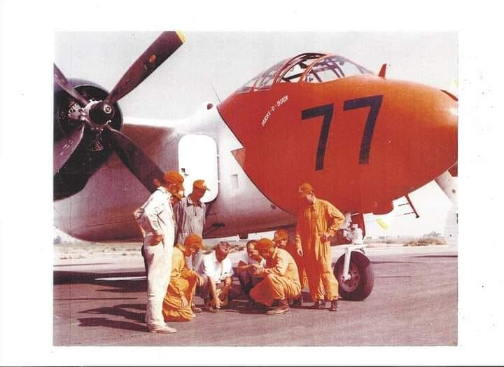
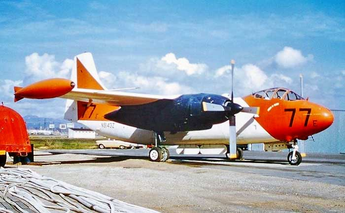
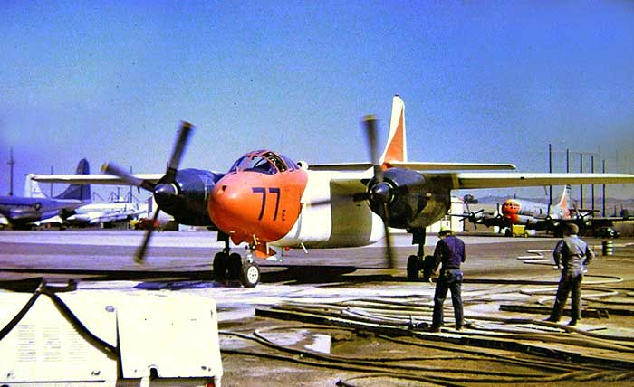
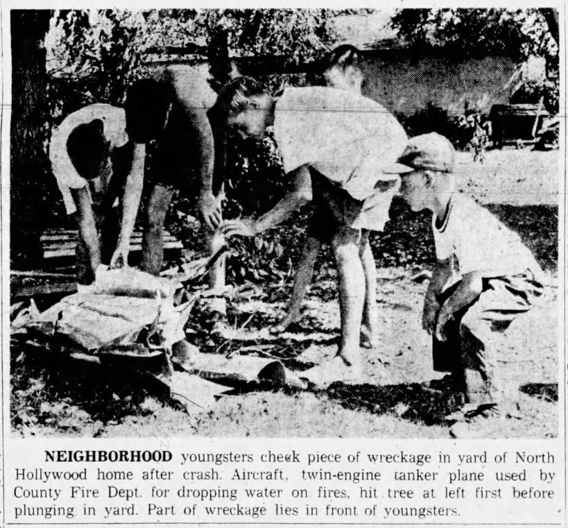
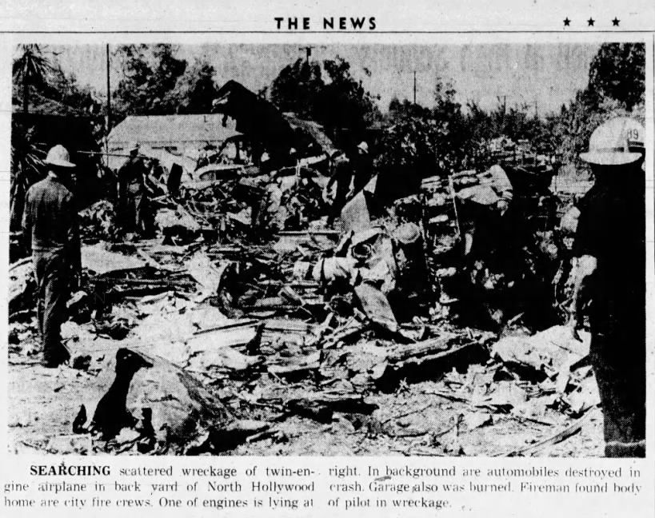
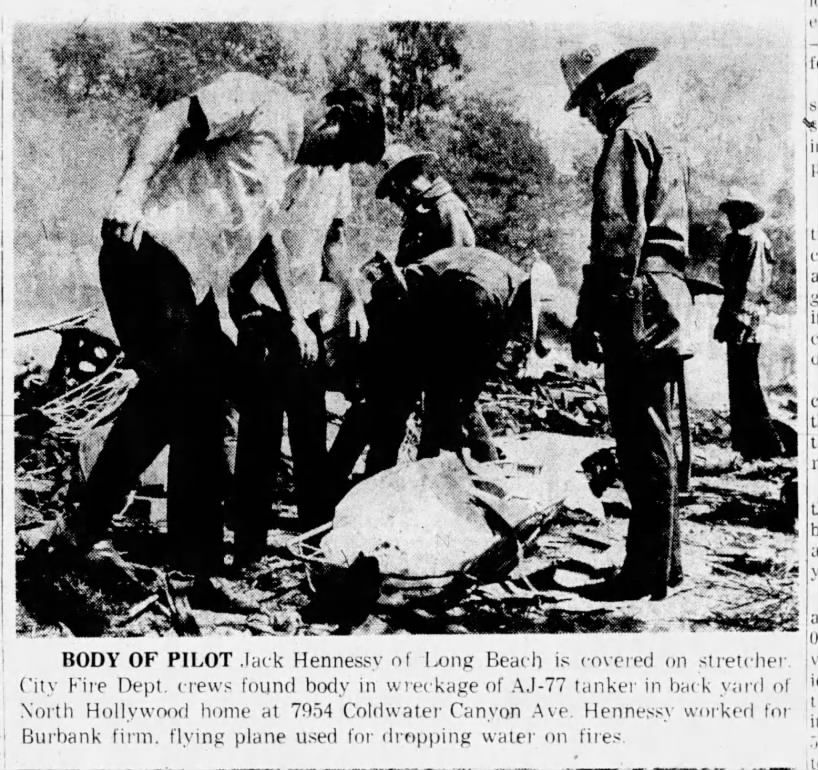
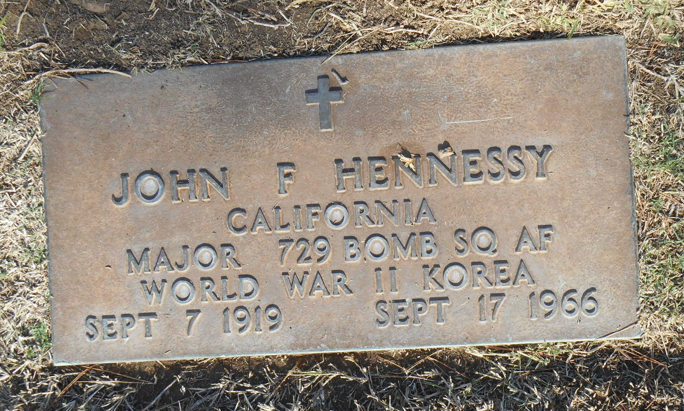
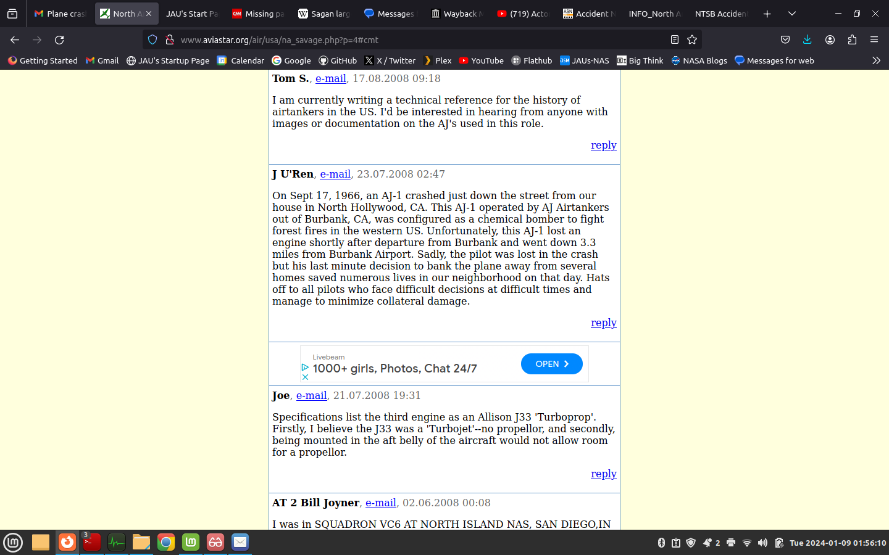